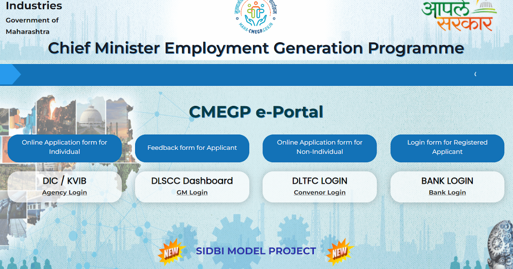

The Scheme will be implemented through District Industries Canters (DICs), Maharashtra State Khadi and Village Industries Boards (KVIB) under the control of Directorate of Industries and also by banks.
Benefit
CMEGP Subsidy Rates
| Categories of beneficiaries under CMEGP | Beneficiary's Contribution (of project cost) | Rate of subsidy (of project cost) | |
|---|---|---|---|
| Urban | Rural | ||
| General Category | 10% | 15% | 25% |
| Special Category (includes SC/ST/Women/Ex-servicemen/differently abled/VJNT/OBC/Minority) | 5% | 25% | 35% |
Eligibility
1.The Age of the applicant should be between 18 to 45. For Special category (including SC/ST/Women/ Ex-servicemen/Differently abled) age is relaxed by 5 years.
2.The Occupation of the applicant should be unemployed youth, Youth willing to establish new ventures.
3.The Annual Income of the Applicant/Family/Parent/Guardian should No criteria LPA
4.The Gender of the applicant should be Male and Female
5.The Marital Status of the applicant should be for all
6.The Educational Qualification of the applicant should be minimum 7th standard pass for project/unit above Rs. 10 lac and for project/units above Rs.25 lac the required educational criterion for the applicant is minimum 10th standard pass.
Documents Required
1.Passport size photo
2.Aadhar card
3.Domicile certificate
4.Educational cetifiacate
5.Undertaking form
6.Project profile
7.Caste certificate(If applicable)
8.Special categary certificate(If applicable)
9.Pan card
10.Populatuion certificate (Only for rural applicant)
11.Clearance /approved certificate (bank)(If Working capital is zero for project cost more than 5 lac)
Application Process:
Step 01:Fill online application on portal https://maha-cmegp.gov.in
Step 02:District level Scrutiny and Coordination Sub-Committee (DLSCC) constituted under the Chairmanship of respective GM, DICs will scrutinize the applications and prepare a primary list of eligible applicants.
Step 03:Primary eligible applicants list will be approved by DLTFC and then forwarded to bank.
Step 04: Bank Sanctioning & Entrepreneurship Development Programme (EDP) training & Disbursment
Step 05:Subsidy claim by Bank to GM
Step 06:Approval of claim by HO and disbursement of margin money viz. nodal bank .
Step 07:completion of three successful years of activity and following the timely repayment schedule as informed by the bank, the margin money in the form of grant-in-aid will be re-appropriated in the applicant’s loan account after confirmation / necessary validation from GM, DIC.